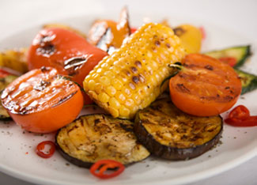

Isn't it nice to get out of the kitchen? Now is a great time of year to head outdoors and enjoy cooking on the grill. Grilling is simple, and it’s a great way to enjoy fresh ingredients, whether it's a juicy steak, fresh fish or vegetables straight from your garden. Whatever you have cooking, here are a few simple tips that can help you get the most enjoyment out of your summer grilling.
The Grill Itself
To get the most from your grill, here are a few things to consider before you start cooking.
Types of grills. Grills come in an astonishing variety of styles and price ranges, and can use several different fuels for their fires: electricity, propane, natural gas or charcoal. There are lots of recommendations out there for the best types of grills - here are a few from our sister magazine Grit. If you’re looking for a green choice, there’s a good case to be made for choosing a gas grill, because they rely on cleaner-burning fuels. (There’s a good discussion of these issues by the Green Guide, available here on the Grist Web site.) But whatever type of grill you use, spending some time with it and learning all about its quirks and special features is a surefire way to grill better food. And hey, what better time to start practicing than right now?
How charcoal affects taste. Cooking with charcoal is an easy way to give food the characteristic smoky flavor that many people associate with grilling. But it’s helpful to remember that there are several different types of charcoal and what type you use affects the flavor of the food. For a smoky flavor, you’ll need to use the more expensive charcoal made from hardwoods - or add wood chips to the fire’s coals. Some people also think using lighter fluid or instant-lighting charcoal briquettes adds undesirable flavors to the food. One way to avoid this is to use a “chimney” with your charcoal grill. This gadget lets you start a fire more quickly, and makes it easier to do without lighter fluid. You can even build your own.
Cooking and Heat
Technically speaking, grilling is the technique of cooking food over live heat. When you’re cooking with fire, there are two main questions you want to ask:
Where do you want the heat? There are two basic methods of grilling: over direct or indirect heat. You'll need to choose the method depending on the type of food you’re cooking. Foods that cook quickly - such as hamburger - need direct heat, where you’re cooking directly over the fire. Those that cook slowly - such as a whole chicken - need indirect heat, where the fire is off to one side of the grill or behind some kind of barrier, not directly under the food. Any recipe or cookbook you use should offer guidance about what to use. Recipetips.com has a good discussion of the basic issues here.
How will you keep the food moist? The key to grilling is to keep the food from getting too dry, which is especially an issue for vegetables and leaner meats. There are a lot of tricks you can use to keep food moist. Recipes will often call for using marinades, brushing the food with oil or brining chicken and pork by soaking them in salt water before cooking. And you can get good results by grilling lower-fat meat without adding any moisture at all. For this, the key is using a meat thermometer to measure the internal temperature of the meat, and following cooking recommendations for that type of meat closely, so you don’t overcook it. Here’s an example of some recommended grilling times from the University of Minnesota extension office.
Finding Fresh Foods
When you grill, you’re not hiding the taste or texture of the food: You’re highlighting it. This means that to get the best results on the grill it helps if you start with the best ingredients. For vegetables, whatever is fresh and seasonal is a good choice. You’re likely to get the best results by buying locally, or getting vegetables straight from your garden.
For meat, you’re also best off choosing anything fresh, local and natural. For beef in particular, there are a lot of good reasons to choose natural and grass-fed meat. But for any type of meat, the more the animal was raised on its natural diet and the fewer unnatural foodstuffs, antibiotics and hormones it was given, the better. To find local producers, the best place to start is the Web site Eat Wild for grass-fed products, and Local Harvest for local food of all kinds.
Fun, Fearless Recipes
Most grilling recipes are deceptively simple, but if you read closely they can give you some useful guidance on keeping food moist, not overcooking and adding complementary seasonings. Feeling inspired? Try these recipes:
Grilling Vegetables. Check out these suggestions from the Colorado State University extension office for grilling all kinds of vegetables (and even fruits!). For more recipes for grilled vegetables, check out Cookthink’s suggestions for grilling eggplant, portobello mushrooms and zucchini.
Bison and Other Leaner Steaks. Try these suggestions from bisonbasics.com for grilling bison without overcooking it. Sustainable Table has some similar tips for cooking grass-fed beef.
You Can Grill Anything!, Sustainable Table. This is a great roundup of how to grill anything including steaks, hamburgers, chicken, pork, pizza, cheese and even fruit!
Kabob Recipes, Foodie View. This on-line recipe listing has dozens of good ideas for making kabobs.
Beyond the Basic Burger, Mother Earth News. If you’re looking for a non-beef burger check out this collection of recipes which includes turkey burgers, a veggie-burger with lentils and even venison burgers.
A Seafood Grill, Herb Companion. Here are a few suggestions for grilling seafood that include a half dozen mouthwatering recipes for fish, shellfish and fresh vegetables. Enjoy!
Do you have some favorite grilling tips or recipes? Share them below!
|
 ISTOCKPHOTO.COM Spice up fresh summer meals with the tantalizing flavors of grilled veggies. |
|
|